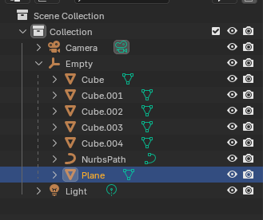
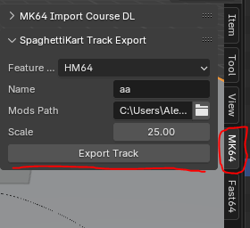

Loading...
Searching...
No Matches
Export
Export
Quick Overview
A basic track needs the following:
- A surface mesh built using a plane (a flat square, not a cube)
- Large enough to encompass the spawn area from (0,0,0) to (0, -16.8, 0) in blender, in-game (0, 0, -420)
- A path built using a Path or bezier curve
Setup
- Naming the objects in blender is not required.
- To export a track all the objects need to be placed inside the empty like so:

- This can be done by dragging mesh or path into the empty while holding
SHIFT
Export Panel

Featureset
- Must be set to HM64 Name
- The name of your track Mods Path
- The mods folder where the data will output too
desktop/mycoolmodswill output asdesktop/mycoolmods/tracks/mytrackname/stuff_hereExport
- Press this button to export the track!
Packaging
- Find the
desktop/mycoolmods/tracksfolder and place a mods.toml file beside the tracks folder. Place the following in mods.toml[mod]name = "mymod"version = "1.0.0" - Highlight the tracks folder and the mods.toml file.
- Right-click --> Add To Archive and turn into a stored zip archive.
- This file should not be compressed.
- If you wish, you may rename this file to mod_name.o2r or mod_name.zip
If you open the zip folder, you should immediately see the tracks folder and the mods.toml file. Inside tracks should be a folder with the name of your track, and some files inside of that folder.
If it does not contain any files similar to the below then something has gone wrong.
- If all checks out, go to your game executable
- Add a
modsfolder. Drag and drop your mod into the mods folder. - Any number of tracks may be placed in the tracks folder
- This allows map packs